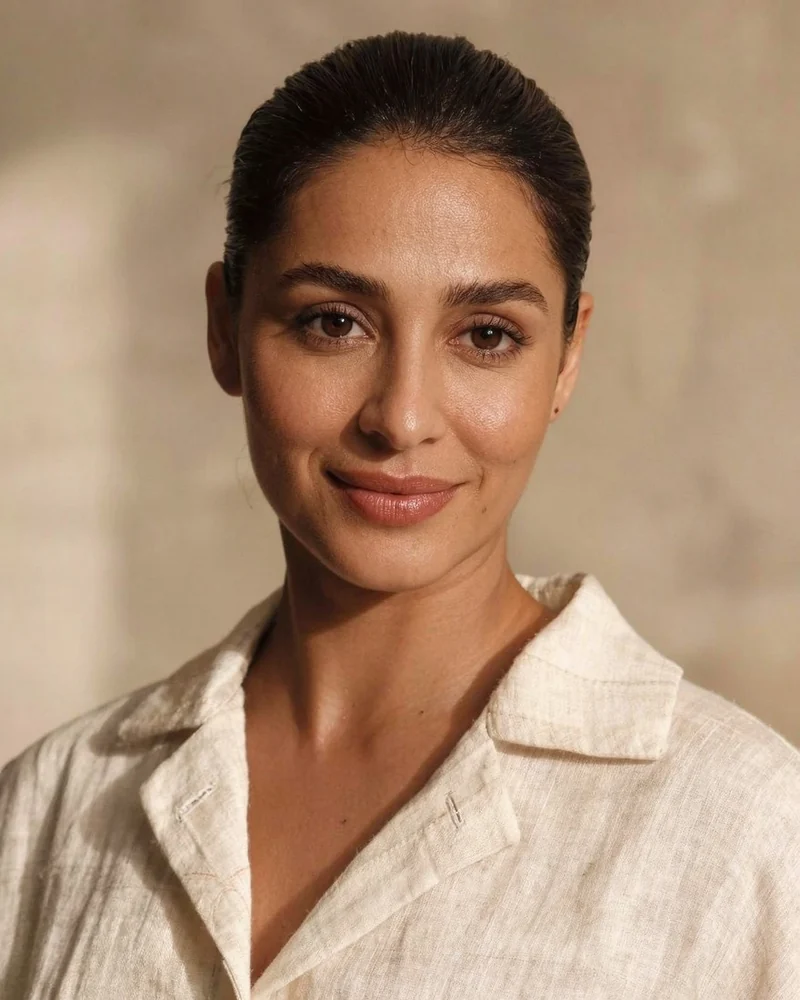

Ingeniería de automatización
Priya Raghunathan
Chennai, India
Conecta tus herramientas y construye los flujos: correo, facturación, agenda, CRM. Lo que ella monta sigue funcionando cuando nadie mira, y si algo falla, lo sabe antes que tú.
Ocho años conectando sistemas en empresas de 5 a 50 personas. Programa, documenta y deja todo con instrucciones en una página.
Puesto abierto Quiero este puesto